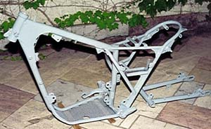
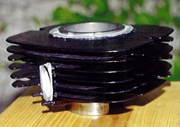
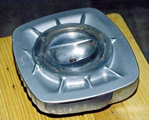
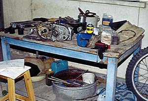
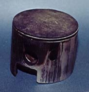
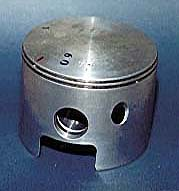

Piston I was lucky to find a brand new piston at Mr. Kaboli's office. This was a
+.25 350 piston for Pursang model, and after consulting with Tim Weaver of
Hugh's Bultaco, I decided to use it. I had a pair of piston rings made for it by
Fouladi Brothers, Tehran's best ring sellers.
Frame 
Body and rear fork, powder coated. My choice of color was limited and instead
of the original metalic silver I had to use this light gray color.
Cylinder

Because of the worn piston and cylinder I had to send the cylinder for
reboring. It was done professionally by Central Grinding & Boring Services
in Tehran. The cylinder was skillfuly powder coated by Haji Zarrin.
Cylinder Head 
The powder coated cylinder head. Note the shine in the combustion chamber,
which is the result of a couple of hours rubing and scrubing. This will help
prevent carbonizing of the chamber and will result in better performance.
My
workshop

The restoration workshop was set up in the backyard of my In-laws' house. The
disassembled engine, front shocks, and front wheel, and also the original
Bultaco parts catalogue can be seen.
 